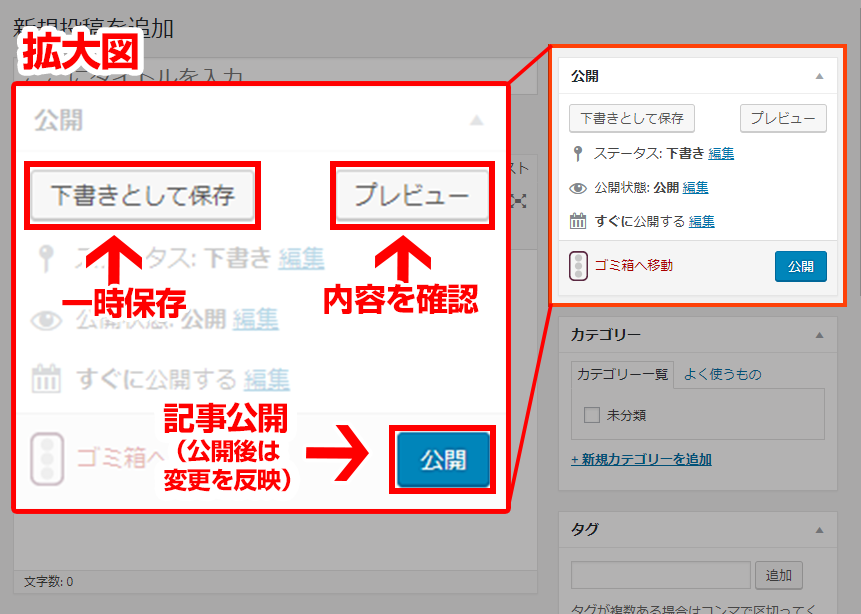

まずはWordPressにログインしてください。
http://XXX.com/wp/wp-login.php
弊社より配布させていただく、URLとID、パスワードを入力し、管理画面へログインします。
サイト更新・管理マニュアル
FURAZOA inc
WordPress更新方法
記事投稿方法-基本
step.1 ログイン
step.2 管理画面から記事を投稿
こちらがWordPressの管理画面（ダッシュボード）です。
記事の投稿だけでなく、各種設定やプラグインの追加、メディアの管理など、WordPressの機能は全てダッシュボードで管理します。
記事の投稿は、左メニューの「投稿」→「新規追加」をクリックしてください。
「新規投稿を追加」が表示されました。ここで記事を作成して、完成したら公開します。投稿で最低限必要な項目といえば、タイトルと本文だけで、それ以外の項目は自動的に設定されます。
カスタム投稿を実装されているサイトはそれぞれの投稿からポストしてください。

step.3 記事のタイトル作成
右の画像の赤い四角のエリアに記事タイトルを挿入します。
最初はこの3要素を踏まえてタイトルを考えるようにしてください。
・記事の内容が対象に伝わっているか
・SEOにつながるキーワードが含まれているか
・全角で30文字前後に収まっているか
※30文字はグーグルの検索結果ページ表示される文字数です。
step.4 記事を作成する 基本
ブログ記事は、投稿画面で作成していきます。作成モードは2種類あって、シンプルなテキストモードと、文章の装飾が容易なビジュアルモードが選べます。
ある程度まで文章を作成したら、一度「プレビュー」で内容を確認して、「下書きとして保存」で記事を保存します。途中で止めるときは「下書きとして保存」してください。
記事が完成したら、「公開」をクリックすればブログ記事が公開されます。公開後の修正も可能で、「変更をプレビュー」で内容を確認して、「公開」をクリックすれば変更が反映されます。

step.5 記事を作成する 画像の挿入
ブログ記事には、なるべく画像や写真を入れるようにしてください。内容に沿った画像選びはとても大切です。たった一枚の画像があるだけで、ブログの内容やイメージがよりわかりやすくなります。
では、ブログに画像を追加してみましょう。まずは画像を表示させたい場所にカーソルを移動させて、タイトルの左下にある「メディアを追加」をクリックします。
「メディアを挿入」が開きました。
追加したい画像をこの上にドラッグドロップしてください。
または、上のタブで「ファイルをアップロード」を選択して、アップロードしたい画像ファイルを選択するという方法もあります。画像ファイルを選んで、「投稿に挿入」をクリックすればOKです。
代替テキストは別名ALTタグと呼ばれ、ここに画像の説明を入力することで、検索エンジンにどのような画像なのかを伝えることができます。これによって、検索エンジンは画像を含めたブログコンテンツ全体をより正しく評価することができます。
画像のALTタグの有無は、検索エンジンの評価対象の一つでもあり、Googleの画像検索で自分のブログ画像を表示させるためには、ALTタグの設定は必須です。
続いて、その下にある「添付ファイルの表示設定」に移ります。設定項目は「配置」「リンク先」「サイズ」があり、クリックすると各設定が選択できます。
「配置」は中央を、「リンク先」はなしを選びましょう。最後の「サイズ」ですが、ブログに使う画像の標準サイズを事前に設定して、そのサイズを選ぶようにします。
step.6 記事を作成する 文中の装飾
ブログ記事内では、文章に対して文字を大きくする、注釈文として文章を挿入したりするなどの装飾を行うことが可能です。
装飾したい文字列を入力する前に、本文入力エリア左上のタブメニューから該当する装飾を選択することで、選択した装飾で文字を入力することができます。
これらの装飾は、すでに入力された文章に対してでも、該当の文字を選択した状態でタブメニューより用いたい装飾を選択することで、装飾を反映させることが可能です。
また、文字を太字にする、下線を引くなどの装飾を行う際は、装飾したい文字を選択した状態で、本文入力エリア上部のメニューから該当のボタンをクリックすると選択した文字を装飾することができます。

step.7 カテゴリーの追加
各記事には、記事を分類するためのカテゴリーを追加することができます。 記事にカテゴリーを追加することで、カテゴリー別に記事をソートすることが出来、より閲覧が快適なブログにすることが可能です。
記事にカテゴリーを追加するには、投稿画面のカテゴリー欄から、登録したいカテゴリーにチェックを入れてください。
登録するカテゴリーの管理は、左メニューの「投稿」→「カテゴリー」から行うことが出来ます。
カテゴリーを追加する場合、「名前」と「スラッグ」に任意の値を入力後、「新規カテゴリーを追加」ボタンを押してください。
カテゴリーを作成した後は、カテゴリー管理画面の右側部分にて、既存のカテゴリーを編集することが出来ます。
また、カテゴリーに親となるカテゴリーを指定することで、ツリー上にカテゴリーを作成していくことが可能です。
作成したブログの内容に合わせて、カテゴリーを編集してみてください。
AllInOneSeoPackについて
弊社では、SEO対策の一環として投稿ページのメタ情報を最適化する事を推奨しております。
WordPressサイトにおいては「All In One Seo Pack」を使用し、簡単にメタ情報を最適化させます。
各投稿ページに「All In One Seo Pack」の入力フィールドが表示されますので、赤い四角の部分に挿入を行ってください。
WordPressサイトにおいては「All In One Seo Pack」を使用し、簡単にメタ情報を最適化させます。
各投稿ページに「All In One Seo Pack」の入力フィールドが表示されますので、赤い四角の部分に挿入を行ってください。
必要な項目を入力する。
meta diescriptionはグーグルの検索結果の説明文となり箇所になります。
ページの内容を要約したものを記載することを推奨しております。
テキストは100〜150文字を推奨しています。
検索対象のキーワードも意図的に入れる事でSEO対策になります。
必須項目は「meta keyword」です。5キーワード前後、「,」で区切って挿入してください。
ex) furazoa,フラゾア,石川県,デザイン制作
カスタムポストについて
本サイトではカスタム投稿を3つ使用しています。
step.1
サイト管理
アナリティクスの見方
step.1
注意事項
1.アップデートは行わないでください。
お客様にお渡ししているWordPressはカスタマイズを行っています。
WordPressの更新をしてしまうと、カスタマイズしている箇所が消えて、機能しなくなる恐れがあります。
最悪の場合サイトが表示されなくなります。
WordPressの機能を拡張するために、様々なプラグインを入れています。
このプラグインも更新することができるのですが、現在お渡ししているWordPressのバージョンと上手く噛み合わずエラーが起きてしまう可能性があります。
プラグインの更新ボタンも押さないようお願い致します。
2.お問い合わせフォームの稼働チェック
外的要因やサーバーのバージョンアップなどでお問い合わせフォームが稼働しなくなる可能性があります。出来うる限り対応させていただきますので、定期的なチェックを行なってください。